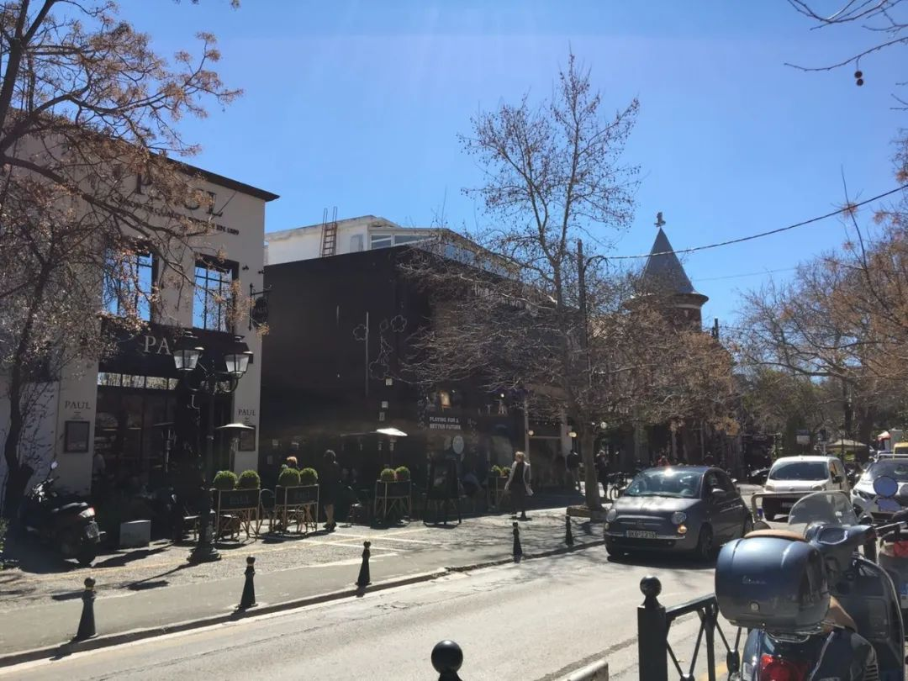
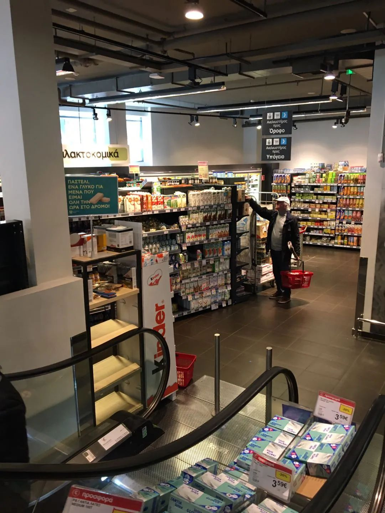

美欧加速撒钱抗疫
原文链接 备份链接 从股市的表现来看，市场更倾向于认同用短期的不便和经济痛苦来换取对病毒的控制 文 |《财经》特派记者 金焱 发自华盛顿 编辑 | 苏琦 新冠肺炎疫情持续肆虐，美国和欧洲为应对疫情影响经济，纷纷出台各种刺激救助政策，试图 …
希腊电视里轰炸似的呼吁大家待在家里，和上海说要屏牢有点类似。但自由散漫的民众并不买账，尤其是年轻人，还是该干嘛干嘛。说白了，你出不出门，纯粹靠自觉。
口述 | 吴女士
整理 | 金 姬
我是80后上海人，因为大学本科学的是西方历史，所以2006年到希腊生活至今。如今在雅典大学读历史与考古系博士后，并在当地一家私立教育机构兼职教中文。
因为希腊没有给华人特别的春节假期，再加上我有课走不开，所以我好多年没有回国过春节了。平时，我一直很关注国内的新闻。从去年底曝出武汉华南海鲜市场出现不明原因肺炎开始，我就一直在浏览相关信息。
欧洲各地狂欢节，可能加速了病毒传播
希腊宣布第一例确诊的新冠肺炎病例是在2月26日，在希腊北部最大港口城市及希腊第二大城市塞萨洛尼基，患者为38岁希腊女性，此前曾去过意大利旅行。
在2月，意大利威尼斯狂欢节，米兰时装周、法国芒通柠檬节和尼斯狂欢节纷纷举行。这些活动的举办地基本分布在法国南部与意大利北部交界处，每年都能吸引成千上万的参加者从欧洲各地乃至世界各地汇聚一堂。这就为此次新冠肺炎疫情在欧洲的迅速传播提供了温床。
希腊也有狂欢节——“净周一”（Kathara Deftera）之前的三个星期。希腊以每年春分后的第一个满月为基准，其后的第一个星期日为这一年的复活节。复活节这周的星期一叫“圣周一”，而“圣周一”之前的第四十天就是“净周一”。
今年的净周一是3月2日，所以今年2月10日开始，希腊人就在过狂欢节了。按照惯例， “净周一”前的那个星期日是狂欢节的高潮和最亮点。这一天，人们可以尽情地吃喝玩乐，男女老幼穿上各种稀奇古怪的衣服，狂欢直至深夜。每年在希腊各个城市都要举办盛大的狂欢游行，载歌载舞。
希腊往年的狂欢节
但是今年突如其来的疫情，政府宣布狂欢节庆典活动取消了……
3月5日至今，确诊人数每天两位数增长
在中国刚开始发生新冠疫情时，可能是因为中希两国关系很好，希腊媒体报道很客观。希腊官员也在力挺中国，希腊华人华侨还募集了一些防护物资寄回国内。
希腊老百姓对中国人也很友好。希腊大约有1100万人口，首都雅典大概就有400多万人。雅典是一座旅游城市，疫情暴发期间，看到中国游客可能会敬而远之，但这也是人之常情，并没有什么歧视或者排华的意思。
第一例确诊病例公布后，第二天超市人流明显增加，大米和意大利面等粮食最受欢迎，但并没有卖空。后来大家也就习惯了，虽然隔三岔五会有新的确诊病例，但一直没有出现抢购狂潮。
拐点大概发生在3月5日，这一天开始，希腊每天新增确诊病例保持在两位数了。大家才开始有点紧张起来。到了3月10日，希腊政府宣布学校关闭2周，这下人们真的感到事态有些严重了。

雅典，一家因为疫情而暂时关闭的公立学校 供图 | 受访者
因为仅仅停课2周，所以所有公立学校都没有在线上课。我8岁儿子所在的公立小学，老师只是建了一个家长群，发一些链接在里面，让小朋友有空自己看看书。我4岁女儿所在的公立幼儿园，老师每周会和孩子通个视频电话，了解一下情况，仅此而已。
希腊人熟人见面之间会行贴面礼。但这次疫情期间，这样的传统仪式也能省则省了。我有时带着一双儿女在家附近溜达，遇到他们同学及其家长，也只能远远点头致意，偶尔寒暄几句。虽然病毒没有隔绝爱，但主动让大家刻意保持距离，这实在让人五味杂陈。
疫情对我的影响比较有限，我所在的私立培训机构可以继续上网课。

**吴女士在给学生在线教中文 供图 | 受访者**
休闲娱乐场所全关闭，消毒液限购
3月13日，为阻止病毒进一步传播，希腊政府宣布将关闭商场、咖啡店和酒吧，但超市和药店会继续营业。到了第二天（3月14日），希腊电视里轰炸似的呼吁大家待在家里，和上海说要屏牢有点类似。
但自由散漫的民众并不买账，尤其是年轻人，还是该干嘛干嘛。毕竟地中海气候的希腊，如今真是景色最宜人之际，窝在家里实在有些辜负了满城春色。而且，希腊当地的房屋多以独门独户或者街面房为主，没有像国内的街道居委这样的组织，所以也不太可能像中国这样严格管理。说白了，你出不出门，纯粹靠自觉。

雅典的一条商业街 供图 | 受访者
在希腊，因为此前的流感，口罩愈来愈难买到。即便买到口罩，和欧洲人一样，希腊人也不习惯戴口罩。

雅典北郊一处地铁站外，疫情使得人流量大幅减少，但戴口罩的人凤毛麟角 *供图 | 受访者* ****
可以随身携带的免洗消毒液和酒精消毒纸也很紧张。我去药店购买的时候，被告知每次只能进两个顾客。

雅典的一家药店门口，贴着有关新冠病毒的宣传资料
而且，购买的消毒液是药店自己配制的，每人也只能限购两瓶。

不过，超市里的家庭防护用品供应倒很充裕。就是你要彻底清洁房屋，各种物品都很齐全。

在雅典，超市里的一次性手套和家用清洁用品供应充足 供图 | 受访者****
截至3月15日，希腊全国确诊病例228例，这在欧洲并不算严重。希腊目前的三例死亡病例都是老人。普通人如果怀疑自己有问题，可以申请做新冠病毒检测，确诊后也可以去医院治疗，这些都是免费的。
在我看来，此次新冠肺炎疫情全球大暴发，不能归罪于某个国家、某座城市或者某些个人。当然，政府如果一开始不够重视，的确需要承担一定责任，比如英国政府太放任。当下，如果病毒在各国之间畅通无阻，更需要世界各国联合起来共同抗疫。因为病毒是全人类的敌人，不是吗？


· 还原世卫组织“吹哨”时间轴——“机会之窗”是如何失去的？
新民周刊所有平台稿件， 未经正式授权
一律不得转载、出版、改编或进行
与新民周刊版权相关的其他行为，违者必究


原文链接 备份链接 从股市的表现来看，市场更倾向于认同用短期的不便和经济痛苦来换取对病毒的控制 文 |《财经》特派记者 金焱 发自华盛顿 编辑 | 苏琦 新冠肺炎疫情持续肆虐，美国和欧洲为应对疫情影响经济，纷纷出台各种刺激救助政策，试图 …
原文链接 备份链接 “外防输入”已是当前疫情防控重中之重。海外累计确诊病例超过10万，世卫组织呼吁各国扩大监测范围。欧洲更多国家关闭边境 文 |《财经》数据研究员 徐进 图 |《财经》视觉中心 编辑 |** 郝洲** 一、北京重启小汤山 …
原文链接 备份链接 中国现有确诊病例已降至1万以下。国内已采取最严密的入境防疫检测措施。美国继续在快车道上狂奔，但基本防疫措施已经得到重视和加强 文丨《财经》数据研究员 徐进 图丨《财经》视觉中心 编辑丨郝洲 一、境外输入病例北京居首， …
原文链接 备份链接 根据当地时间3月8日18时意大利卫生部公布的最新数据，意大利现有新冠病毒患者6387例，死亡366例，治愈622例，累计确诊感染新冠病毒总人数为7375例，较3月7日18时新增1492例，新增133例死亡病例。 据外 …
原文链接 备份链接 2月29日，特朗普在保守派政治行动会议上。来源：特朗普推特 记者：刘芳 “ “最害怕的还是（在疫情过后）我人没怎么样但是课却没过。” ” 不断扩散的新冠肺炎疫情给美国东西海岸人口稠密地区持续带来压力，就连总统特朗普也因 …